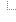

王宏祥 同學, 歡迎!
您本次的登入時間是:[2019/3/5 16:21:17]
登出系統
提醒您, 選課密碼請定期更新(最好三個月一次), 以策安全!
您的密碼已經有 168 天沒有更新了!
主選單
選課系統公告

選課系統公告
選課系統相關
檢視已選修科目
我的選課計畫
檢視篩選公告
檢視畢業資格審查表
檢視選課結果單PDF
我的加簽單
列印選課單
更改密碼
資料查詢
查詢開課資料
進階開課資料查詢
支援本班課程
跨領域學程
所有異動科目
成績查詢
上學期功課表
上學期選課單
問題與表單下載
一般問題
系統操作手冊
課表doc檔
A tree for site navigation will open here if you enable JavaScript in your browser.